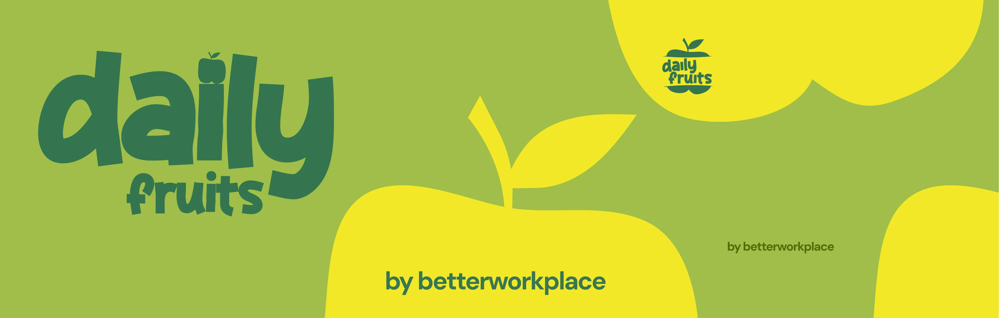
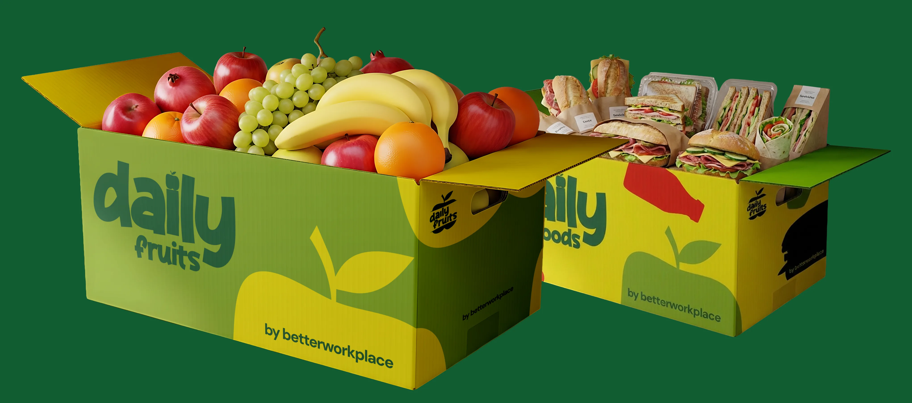
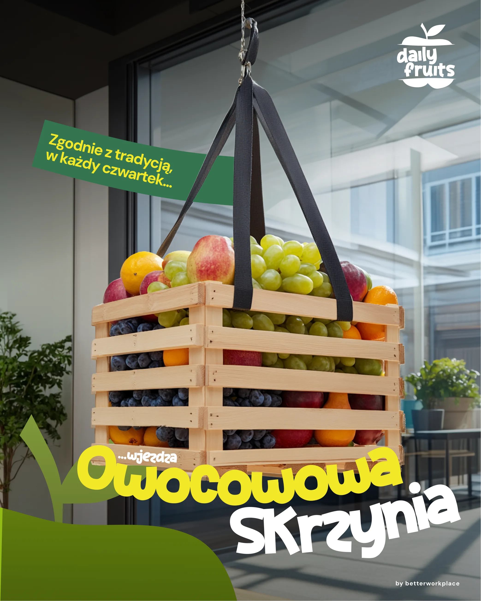
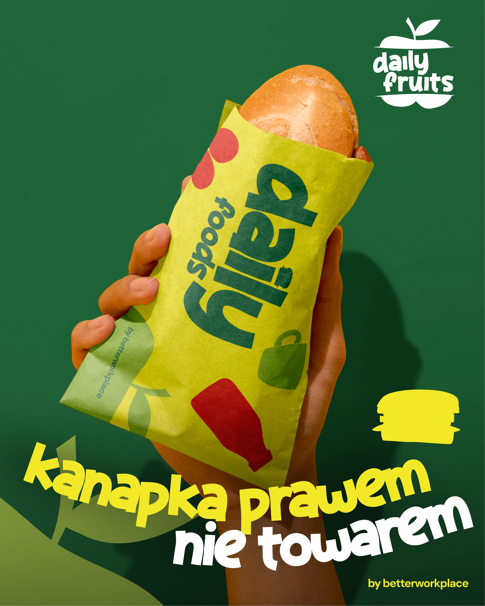
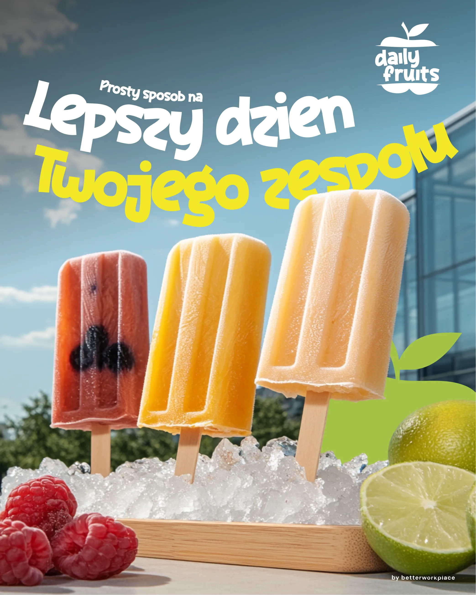
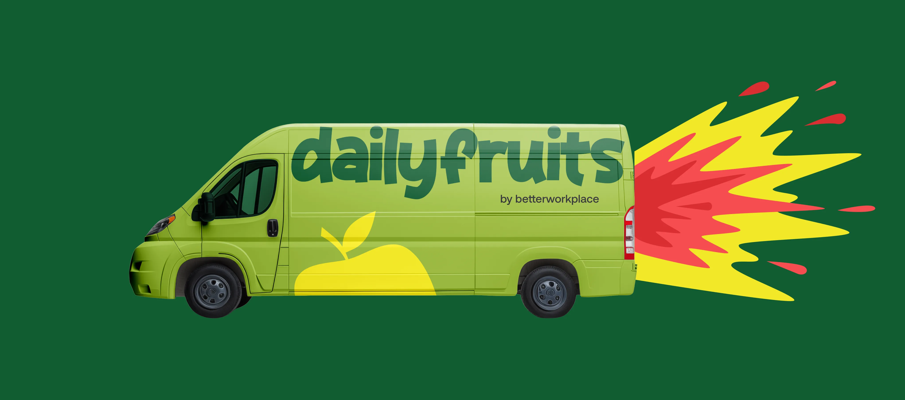
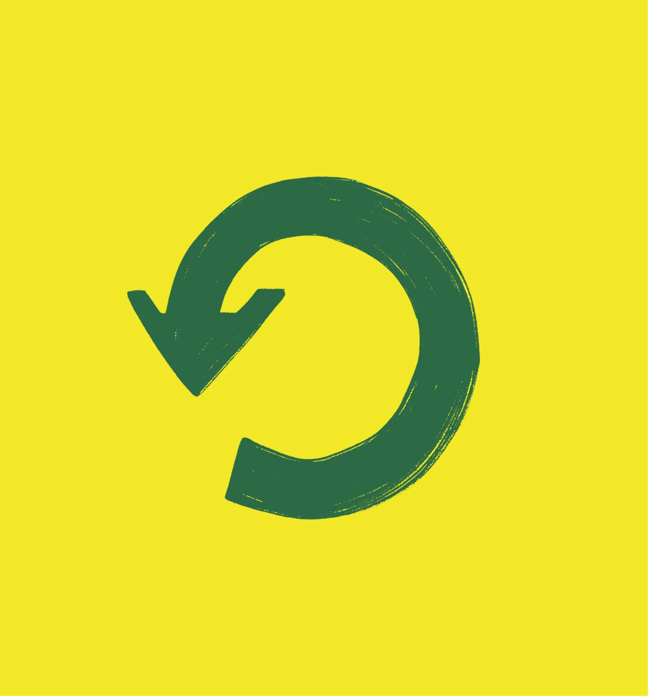
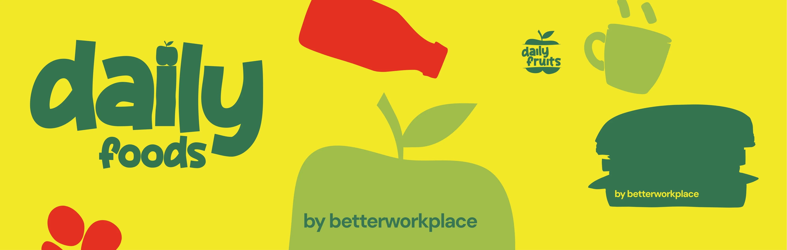
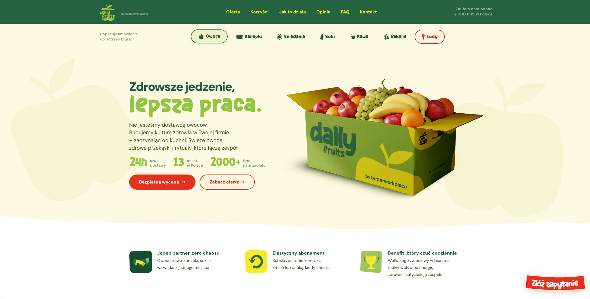

Brand Guide
Spojny jezyk marki DailyFruits — osobowosc, glos, kolory, typografia i zasady wizualne. Wedlug tego budujemy kazdy komunikat i material.
Kolory
Paleta DailyFruits jest naturalna i ciepla — oparta na glebokim zielonym, limonkowym akcencie i czerwonym CTA.
Kolory glowne
Kolory pomocnicze
Proporcje uzycia
Green Dark to ZAWSZE kolor tekstu na jasnym tle (nie czarny, nie szary). Red TYLKO na CTA i akcentach — nigdy jako tlo sekcji. Yellow nigdy jako kolor tekstu — za slaby kontrast, tylko na ciemnym tle. Cream jest domyslnym tlem — bialy (#FFF) punktowo (karty, inputy).
Typografia
Dwa fonty, dwie role. DM Sans na body i naglowkach — geometryczny, pewny siebie. Achiko na claimach i stickerach — charakterowy, display.
Hierarchia typograficzna
Osobowosc marki
Kim jest DailyFruits jako marka — misja, archetyp, obietnica i terytorium.
Gdyby DailyFruits byl osoba, bylby kompetentnym doradca HR, ktory wie, ze wellbeing zaczyna sie od kuchni. Nie moralizuje — po prostu stawia skrzynke swiezych owocow i mowi: „To dziala. Sprawdzilismy w 2000 firmach.” Jest ciepiy, ale konkretny. Nigdy nie przesadza z entuzjazmem, bo jego sila sa twarde dane, nie hasla.
Atrybuty glosu
Cztery atrybuty definiujace sposob, w jaki DailyFruits sie komunikuje.
Konkretny
Ciepiy
Pewny siebie
Praktyczny
Slownik marki
Konkretne zamienniki — co DailyFruits mowi, a czego nigdy nie powie.
Odbiorcy i ton
DailyFruits mowi glownie do decydentow operacyjnych i budzetowych. Ton sie lekko przesuwa w zaleznosci od rozmowcy.
Grupa docelowa
Office Manager / HR
Decydent operacyjny. Szuka benefitu latwego do wdrozenia i rozliczenia, ktory realnie docenia pracownicy.
CEO / CFO
Decydent budzetowy. Chce ROI: mniej absencji, lepsza retencja, niski koszt per pracownik.
Pracownicy
Beneficjenci koncowi. Nie decyduja o zakupie, ale ich zadowolenie decyduje o kontynuacji.
Ton w zaleznosci od kanalu
Brand adaptacje
Materialy referencyjne — packaging, kreacje social, fleet branding, ikony i strona www.
Hero banner

Packaging

Kreacje social



Fleet & ikony


DailyFoods banner

Strona www

Do & Don't
Zasady komunikacji marki DailyFruits — co robimy, a czego unikamy.
✓ Rob
- Uzywaj „Ty/Twoj” zamiast „Panstwo” w copy marketingowym
- Zaczynaj od korzysci, nie od produktu („Zmniejsz absencje” > „Kup owoce”)
- Podawaj twarde liczby: 2000+ firm, 13 miast, 24h dostawa, 81%
- Uzywaj krotkich zdan (max 20 slow)
- Nazywaj rytualy: Owocowe Czwartki, Kanapkowe Wtorki
- Aktywne czasowniki: „Zamow”, „Sprawdz”, „Zacznij”
- Claim fontem Achiko, body fontem DM Sans
- Podkreslaj ekosystem: DF + DFo + BW
- Mow o „kulturze zdrowia”, „rytualach”
✗ Nie rob
- „innovative”, „synergia”, „holistyczny”, „complex solution”
- WIELKIE LITERY (SUPER OFERTA!)
- Emoji w komunikacji B2B (LinkedIn, email, strona)
- Obietnice bez pokrycia („najlepsze owoce na swiecie”)
- „tani/najtaniej” — mow „oplacalny”, „inwestycja w zespol”
- Deprecjonowanie konkurencji wprost
- Stockowe zdjecia ludzi — packshoty produktowe
- Slowo „dostawca” na okreslenie DailyFruits
- Mieszanie jezykow (polsko-angielskie zdania)